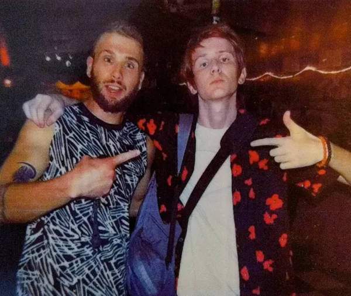

About
Generation Simulation burst onto the scene in 2020 with their debut EP, "Hyperkinesis." Featuring three songs, the EP showcased their ability to blend infectious melodies with thought-provoking lyrics. The band followed up with their second album, "Fluorescent," in 2021 with 12 new songs.
The band comprises of two members, Jack Gruber, the lead singer, and Tyler Gescheidle, the drummer.
Generation Simulation has been steadily building their audience through smaller gigs. Their most streamed Spotify track, "Half Robotic," has received over 32,000 listens.